This report documents the architectural design, pre-development prototyping, relational database modelling, software implementation, and functional verification for Zazen Matcha & Tea Co., a bespoke full-stack e-commerce web platform engineered for the Eduvos ITECA3-34 Web Development and e-Commerce Technologies Deliverable 2 assignment.
In strict compliance with academic instructions, the application has been engineered entirely with custom HTML5, CSS3, vanilla JavaScript (ES6+), PHP 8.0, and MariaDB/MySQL. Zero third-party Content Management Systems (CMS), website builders, or monolithic application frameworks (such as WordPress, WooCommerce, Shopify, or Laravel) were utilized.
The software solution provides a dual-faceted operational environment, publicly deployed and operational at https://zazen-matcha.alwaysdata.net/:
Zazen Matcha & Tea Co. is a boutique specialty tea purveyor conceptually established in Cape Town, South Africa. The company specializes in the sourcing and ethical distribution of single-origin, shade-grown organic tencha leaves harvested in the hillside tea gardens of Uji, Kyoto Prefecture, Japan.
In traditional Japanese tea culture, Zazen (seated meditation) embodies mindfulness, clarity, and intentional calm. The enterprise translates this ancient heritage into contemporary everyday rituals for urban professionals, wellness practitioners, and discerning tea enthusiasts. Unlike mass-market culinary matcha powder often adulterated with fillers, sweeteners, or industrial food colorants, Zazen Matcha delivers stone-milled, pure ceremonial green tea rich in L-theanine and clean caffeine.
The South African specialty beverage sector has witnessed surging consumer demand for functional, health-promoting alternatives to commercial coffee and energy drinks. However, consumers encounter significant friction in the domestic market:
The primary technical and operational objectives of the Deliverable 2 project comprise:
SELECT ... FOR UPDATE) during checkout to eliminate inventory race conditions and prevent overselling.htmlspecialchars output encoding (Cross-Site Scripting prevention), cryptographically random session tokens (CSRF prevention), and adaptive Bcrypt password hashing.| User Persona | Profile & Behavioral Motivations | Primary System Requirements |
|---|---|---|
| Persona A: The Daily Ritual Practitioner | Experienced consumers seeking high-grade ceremonial matcha (30g tins) for morning whisking. Prioritizes harvest transparency, consistent quality, and streamlined reordering. | Quick re-ordering, order history tracking, transparent live stock indicators, and swift guest/registered checkout. |
| Persona B: The Health-Conscious Novice | Beginners transitioning from coffee to matcha for jitter-free focus and sustained energy. Seeks educational brewing guidance and curated preparation gear. | Comprehensive origin storytelling, step-by-step water temperature guidelines, bundled starter sets, and customer care inquiries. |
| Persona C: The Store Administrator | Commercial store operator requiring immediate operational oversight over inventory, orders, and sales performance. | Secure administrative authentication, dynamic KPI dashboard metrics, paginated catalog CRUD, low-stock warnings (≤ 10 units), and database health verification. |
| Architectural Layer | Selected Technology | Technical Justification | CMS Status |
|---|---|---|---|
| Markup & Semantics | Semantic HTML5 | Native semantic tags (<header>, <main>, <article>, <section>, <nav>, <footer>) guarantee screen-reader accessibility and clean DOM structure. |
COMPLIANT |
| Presentation & Layout | Modern CSS3 (Grid / Flexbox) | Custom Properties (design tokens), CSS Grid, and media queries provide fluid responsiveness across mobile, tablet, and desktop without bulky third-party UI frameworks. | COMPLIANT |
| Client-Side Behaviour | Vanilla JavaScript (ES6+) | Lightweight, vanilla IIFE scripts handle mobile drawer toggling, dynamic quantity steppers, dismissible alerts, and gallery thumbnail switching without library overhead. | COMPLIANT |
| Server-Side Runtime | PHP 8.0 (Native Modular) | High-performance server scripting with strict typing, native Bcrypt hashing, secure session handling, and robust PDO database abstraction. | COMPLIANT |
| Database System | MariaDB 10.4 / MySQL (InnoDB) | Relational database providing ACID transactions, foreign key constraints (ON DELETE RESTRICT), and utf8mb4 character encoding. |
COMPLIANT |
| Web Server Environment | Apache 2.4.58 (XAMPP Windows) | Proven local execution environment providing URL rewrite support, SSL/TLS handling, and native PHP integration. | COMPLIANT |
The prototyping phase established the visual identity, wireframe layout, and user journeys prior to full-stack code implementation. All prototype artefacts are preserved in docs/prototypes/.
The pre-development customer prototype is documented in docs/prototypes/customer/README.md and supported by four authentic high-fidelity desktop mockups captured during the design phase:
01-home-page-prototype.jpg)Screen 01: Storefront Homepage: Establishes the editorial tone through a high-resolution hero banner ("Mindful Matcha. Every Day."), primary call-to-action buttons ("Shop Matcha", "Explore Our Story"), a three-pillar value grid (100% Ceremonial Grade, Mindfully Sourced, Calm Sustained Energy), visual category cards, and the Uji hillside origin narrative.
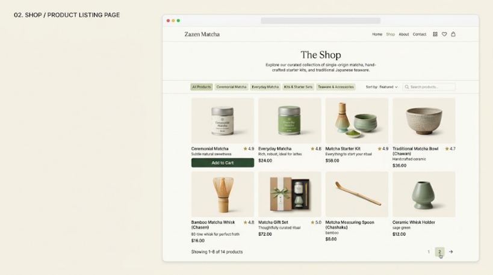
02-shop-catalog-prototype.png)Screen 02: Shop / Catalog Browsing: Presents the complete product range via a responsive 4-column card grid. Incorporates horizontal category filter pills (All Products, Ceremonial Matcha, Everyday Matcha, Kits & Starter Sets, Teaware & Accessories), search input, sorting controls, star review ratings, ZAR pricing, quick add-to-cart buttons, and numbered pagination.
03-product-details-prototype.png)
Screen 03: Product Details & Brewing Ritual: Focuses on consumer confidence and education. Features hierarchical breadcrumbs, a multi-image gallery with selectable thumbnail views, verified review scores (124 reviews, 5.0 stars), inline quantity steppers (- 1 +), dual purchase buttons (Add to Cart, Buy Now), expandable preparation accordions, and related teaware recommendations.
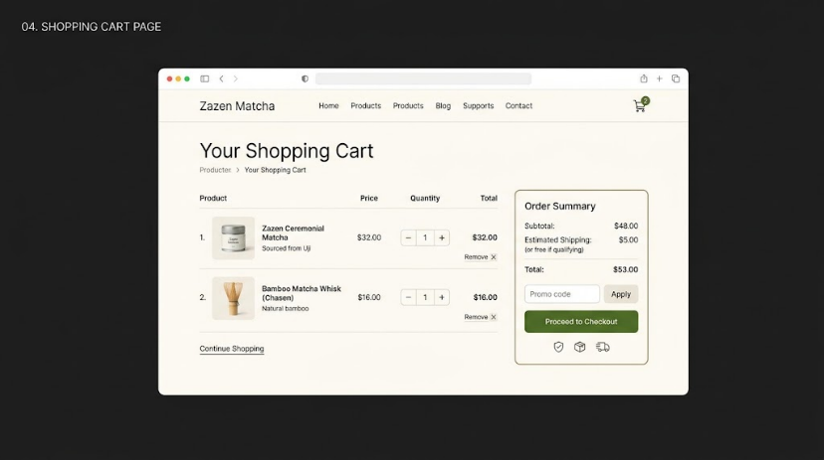
04-shopping-cart-prototype.png)Screen 04: Shopping Cart Page: Illustrates session shopping bag management with tabular item rows, unit prices, interactive quantity steppers, line totals, item removal controls, promo code inputs, and a floating order summary card with trust badges.
The administrator management interface is documented in docs/prototypes/admin/README.md across eleven operational screen specifications:
admin/order-details.php (currently read-only; admin status dropdowns proposed for Deliverable 3).
While the initial supplied mockups targeted desktop viewports, responsive adaptation for tablet (769px ≤ w ≤ 960px) and mobile (w ≤ 768px) viewports was codified in css/style.css:
#nav-toggle) transitioning into an absolute dropdown drawer (.nav-wrapper.is-open).
In accordance with academic ethics, client approval has not been fabricated or assumed. A formal, unpopulated sign-off instrument has been generated at docs/prototypes/client-approval-template.md. This template captures client information, prototype evaluation criteria across six dimensions, change request logs, and formal signature authorization fields for subsequent stakeholder execution.
The system design phase generated five core architectural models and a comprehensive data dictionary, saved in docs/diagrams/ and docs/deliverable-2/.
docs/diagrams/ and rendered as standalone high-resolution vector diagrams (SVG) in docs/diagrams/rendered/. Below, each design model is accompanied by its rendered visual diagram (Figures 3.1 through 3.4), structural breakdown, and verification against the live codebase. Full raw Mermaid source codes are preserved in Appendices A through D.
Documented in docs/diagrams/crc-cards.md. To reconcile procedural PHP implementation with academic object-oriented domain modelling, the CRC cards explicitly distinguish conceptual domain entities and architectural service collaborators:
password_hash().uq_categories_name).unit_price at the instant of purchase.beginTransaction, commit, rollBack).require_admin_login().require_customer_login().hash_equals()).e()).
Documented in docs/diagrams/eerd.md and rendered in Figure 3.1. Models all seven physical relational tables in the MariaDB 10.4 schema (admins, customers, categories, products, orders, order_items, contact_messages), complete with column data types, nullability, primary/foreign/unique key constraints, and relational cardinalities:
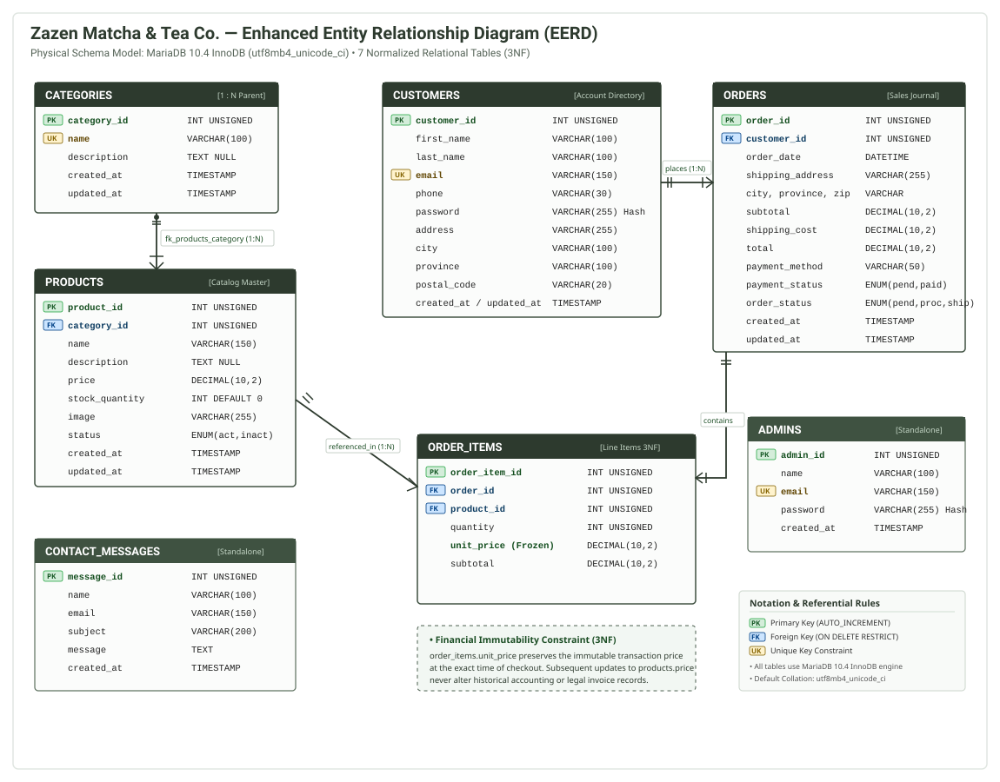
docs/diagrams/rendered/eerd.svg)Relational Integrity & Constraint Rules:
categories (1) to products (0..N) via fk_products_category (ON DELETE RESTRICT, ON UPDATE CASCADE) — prevents deletion of categories while child products exist.customers (1) to orders (0..N) via fk_orders_customer (ON DELETE RESTRICT, ON UPDATE CASCADE) — preserves audit history for customer purchases.orders (1) to order_items (1..N) via fk_order_items_order (ON DELETE RESTRICT, ON UPDATE CASCADE) — guarantees parent order existence for every purchased line item.products (1) to order_items (0..N) via fk_order_items_product (ON DELETE RESTRICT, ON UPDATE CASCADE) — prevents catalog deletion of items tied to historical transactions.admins and contact_messages operate as standalone operational tables with independent lifecycle scopes.order_items.unit_price stores the historical purchase price at the instant of checkout execution, guaranteeing that subsequent catalog price updates to products.price never retroactively distort historical revenue totals or customer invoice receipts.
Documented in docs/diagrams/context-diagram.md and rendered in Figure 3.2. Establishes the high-level system boundary (0.0 Zazen Matcha e-Commerce Platform) and models all inbound and outbound data flows with external human actors (Customer / Guest Shopper and Store Administrator):
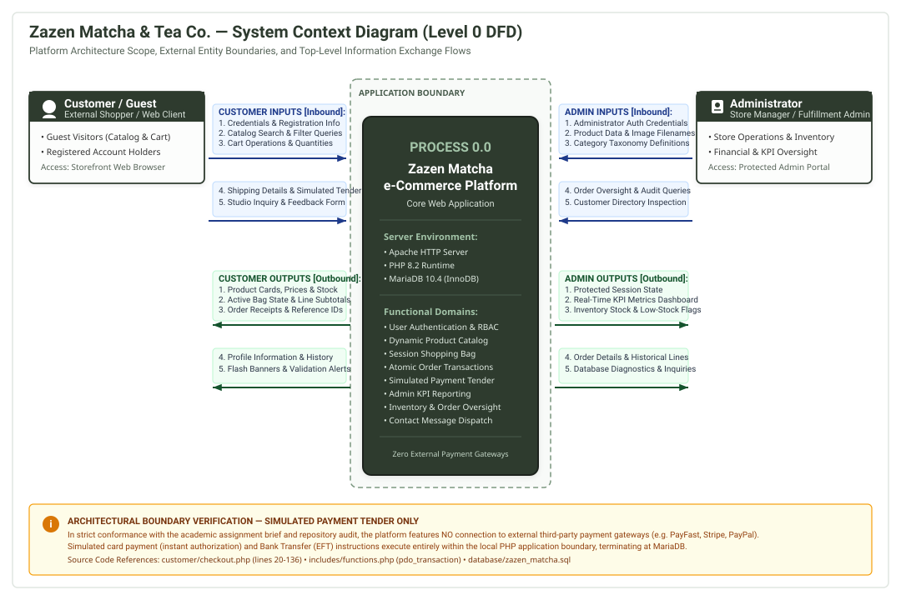
docs/diagrams/rendered/context-diagram.svg)Actor Information Flow Breakdown:
order_id references, profile details, and security/validation flash alerts.
Documented in docs/diagrams/dfd-level-1.md and rendered in Figure 3.3. Decomposes Process 0.0 into seven concrete, functional subprocesses mapping directly to PHP controllers and eight underlying data stores (D1 to D8):
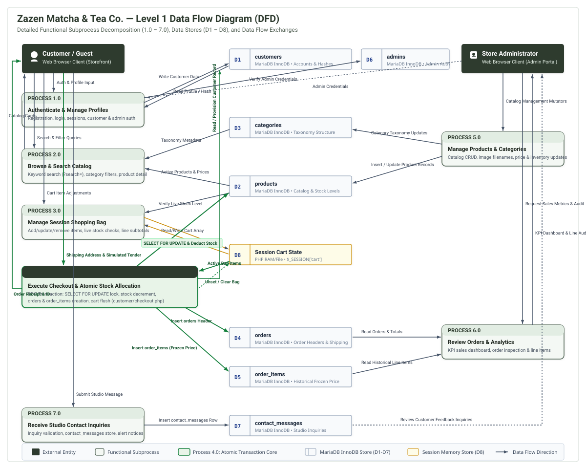
docs/diagrams/rendered/dfd-level-1.svg)Functional Subprocesses & Data Store Exchanges:
D1: customers, and administrator authentication against D6: admins.D2: products and taxonomy categories from D3: categories to render product cards and galleries.D8: Session Cart State, performing live stock validation against D2: products.D8, acquires pessimistic row locks (SELECT ... FOR UPDATE) on D2: products, decrements stock quantities, inserts order records into D4: orders and line items into D5: order_items, flushes D8, and renders confirmation receipts.D2: products and D3: categories.D4: orders, line items from D5: order_items, and customer data from D1: customers to compute executive KPI totals.D7: contact_messages for administrative review.
Documented in docs/diagrams/use-case-diagram.md and rendered in Figure 3.4. Models 20 implemented use cases across three distinct human actors, defines «include» behavioral subroutines, and articulates proposed future extensions:
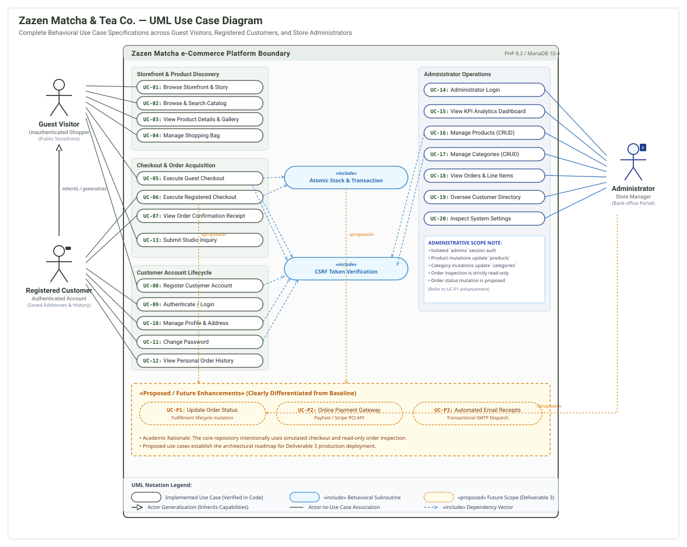
docs/diagrams/rendered/use-case-diagram.svg)Actor Hierarchy & Behavioral Scope:
UC-01, UC-02, UC-03), manage a cart (UC-04), execute guest checkout (UC-05), register an account (UC-08), or submit contact inquiries (UC-13).UC-06), profile and address management (UC-10), password modification (UC-11), and personal order history (UC-12).UC-14) to view KPI dashboards (UC-15), manage products (UC-16), manage categories (UC-17), inspect orders (UC-18), oversee customers (UC-19), and check system diagnostics (UC-20).«include» Atomic Stock Deduction is included in all checkout flows (UC-05, UC-06); «include» CSRF Token Validation protects all POST mutations.UC-P1 (Order status transition mutation), UC-P2 (Online payment gateway API), and UC-P3 (Automated SMTP email receipts) are visually segregated within a distinct dashed container.
Documented in docs/deliverable-2/database-design.md. Provides a comprehensive data dictionary for all seven tables, covering column data types, nullability, default values, key constraints, fixed-point financial arithmetic (DECIMAL(10,2)), and UTF-8 multi-byte collation (utf8mb4_unicode_ci).
The implementation codebase demonstrates defensive programming, security controls, and standards-compliant syntax. Below are four representative excerpts from the actual codebase with academic technical commentary.
The excerpt below from customer/checkout.php (Lines 270–336) illustrates the transactional checkout process, demonstrating how ACID properties and row-level locking are implemented in native PHP:
// Source: customer/checkout.php (Lines 270-336)
try {
$pdo->beginTransaction();
// 4a. Lock and re-fetch cart products inside the transaction (FOR UPDATE)
$txProductIds = array_keys($cleanCart);
$txPlaceholders = implode(', ', array_fill(0, count($txProductIds), '?'));
$lockSql = "
SELECT
product_id,
name,
price,
stock_quantity,
status
FROM products
WHERE product_id IN ({$txPlaceholders})
FOR UPDATE
";
$lockStmt = $pdo->prepare($lockSql);
$lockStmt->execute(array_values($txProductIds));
$lockedRows = $lockStmt->fetchAll();
$lockedProducts = [];
foreach ($lockedRows as $lRow) {
$lockedProducts[(int) $lRow['product_id']] = $lRow;
}
// 4b. Final authoritative stock & price verification
$verifiedItems = [];
$verifiedSubtotal = 0.0;
foreach ($cleanCart as $pid => $requestedQty) {
if (!isset($lockedProducts[$pid])) {
throw new RuntimeException('STOCK_ERROR:One of the items in your cart is no longer available.');
}
$lockedProd = $lockedProducts[$pid];
$lockedStock = (int) $lockedProd['stock_quantity'];
$lockedPrice = (float) $lockedProd['price'];
if ($lockedProd['status'] !== 'active') {
throw new RuntimeException(
sprintf('STOCK_ERROR:"%s" is no longer active and cannot be purchased.', $lockedProd['name'])
);
}
if ($lockedStock <= 0 || $requestedQty > $lockedStock) {
throw new RuntimeException(
sprintf(
'STOCK_ERROR:Insufficient stock for "%s" (requested %d, currently %d available).',
$lockedProd['name'],
$requestedQty,
max(0, $lockedStock)
)
);
}
$lineSubtotal = round($lockedPrice * $requestedQty, 2);
$verifiedSubtotal += $lineSubtotal;
$verifiedItems[] = [
'product_id' => $pid,
'quantity' => $requestedQty,
'unit_price' => $lockedPrice,
'subtotal' => $lineSubtotal,
];
}Technical Explanation & Engineering Justification:
$pdo->beginTransaction() guarantees that the multi-step order placement (customer creation, order insertion, order_items insertion, and inventory deduction) succeeds as a single atomic unit. If an error occurs, $pdo->rollBack() restores previous database state.FOR UPDATE): In high-traffic e-commerce environments, multiple concurrent shoppers may attempt to purchase the final inventory unit simultaneously. Appending FOR UPDATE instructs the InnoDB engine to acquire exclusive row-level locks on the selected product records. Other sessions attempting to read or update these rows must wait until this transaction commits or rolls back, completely eliminating race conditions.
The excerpt below from customer/products.php (Lines 258–313) illustrates the semantic markup and security attributes used in the catalog product cards:
<!-- Source: customer/products.php (Lines 258-313) -->
<article class="product-card shop-product-card">
<a href="<?php echo e($productUrl); ?>" class="product-card-media" aria-label="View <?php echo e($product['name']); ?>">
<img
src="<?php echo e($imageUrl); ?>"
alt="<?php echo e($product['name']); ?>"
width="1000"
height="1000"
loading="lazy"
>
</a>
<div class="product-card-body">
<div class="shop-card-header-row">
<h2 class="product-card-title">
<a href="<?php echo e($productUrl); ?>">
<?php echo e($product['name']); ?>
</a>
</h2>
<span class="shop-card-rating" aria-label="Rated <?php echo e($ratingValue); ?> out of 5 stars">
<span class="star-glyph" aria-hidden="true">★</span> <?php echo e($ratingValue); ?>
</span>
</div>
<p class="product-card-desc">
<?php echo e($product['description']); ?>
</p>
<div class="product-card-meta">
<span class="product-card-price"><?php echo e(format_price($product['price'])); ?></span>
<?php if ($isLowStock): ?>
<span class="stock-badge stock-low">Low Stock (<?php echo $stockQty; ?> left)</span>
<?php elseif ($isInStock): ?>
<span class="stock-badge stock-in">In Stock</span>
<?php else: ?>
<span class="stock-badge stock-out">Out of Stock</span>
<?php endif; ?>
</div>
<div class="product-card-footer">
<?php if ($isInStock): ?>
<form action="<?php echo e($productUrl); ?>" method="post" class="card-quick-add-form">
<input type="hidden" name="csrf_token" value="<?php echo e(csrf_token()); ?>">
<input type="hidden" name="product_id" value="<?php echo $productId; ?>">
<input type="hidden" name="quantity" value="1">
<button type="submit" class="btn btn-primary btn-card-full">
Add to Cart
</button>
</form>
<?php else: ?>
<a href="<?php echo e($productUrl); ?>" class="btn btn-outline btn-card-full">
View Details
</a>
<?php endif; ?>
</div>
</div>
</article>Technical Explanation & Engineering Justification:
<article class="product-card shop-product-card"> encapsulates each catalog offering as a self-contained, distributable item. Media images specify explicit aspect dimensions (width="1000" height="1000") paired with native loading="lazy" to eliminate layout shifts (Cumulative Layout Shift) and defer non-critical offscreen network fetches.aria-label bindings on media links and rating containers guarantee that assistive screen readers announce product names and star ratings accurately. Purely decorative star glyphs are hidden from accessibility trees via aria-hidden="true".<input type="hidden" name="csrf_token" value="..."> validated on the server using constant-time string comparison (hash_equals()), blocking cross-origin request forgery.e() which applies htmlspecialchars(..., ENT_QUOTES | ENT_SUBSTITUTE, 'UTF-8'), neutralising Cross-Site Scripting (XSS) vectors.
The excerpt below from js/script.js (Lines 67–110) illustrates the vanilla JavaScript quantity stepper control:
// Source: js/script.js (Lines 67-110)
/**
* Initialises optional + / - quantity stepper controls on product/cart forms.
*/
function initQuantitySteppers() {
const steppers = document.querySelectorAll('.quantity-stepper');
steppers.forEach(function (stepper) {
const input = stepper.querySelector('.quantity-input');
const buttons = stepper.querySelectorAll('[data-qty-step]');
if (!input || input.disabled) {
return;
}
function clampQuantity(val) {
const min = parseInt(input.getAttribute('min'), 10) || 1;
const max = parseInt(input.getAttribute('max'), 10) || 999;
let parsed = parseInt(val, 10);
if (isNaN(parsed) || parsed < min) {
parsed = min;
} else if (parsed > max) {
parsed = max;
}
input.value = String(parsed);
}
buttons.forEach(function (btn) {
btn.addEventListener('click', function () {
const step = parseInt(btn.getAttribute('data-qty-step'), 10) || 0;
const current = parseInt(input.value, 10) || 1;
clampQuantity(current + step);
// Auto-submit cart quantity update form when stepper is clicked in cart
const cartForm = stepper.closest('.cart-update-form');
if (cartForm && parseInt(input.value, 10) !== current) {
cartForm.submit();
}
});
});
input.addEventListener('change', function () {
clampQuantity(input.value);
});
});
}Technical Explanation & Engineering Justification:
<input type="number"> fields if JavaScript is disabled. When active, script enhances the UI with touch-friendly increment/decrement step buttons ([data-qty-step]).clampQuantity() enforces minimum (≥ 1) and maximum bounds derived directly from DOM attributes, preventing invalid negative or zero values.stepper.closest('.cart-update-form') and submits immediately, providing smooth desktop and mobile interaction without requiring extra "Update" button clicks.(function () { 'use strict'; ... })(); to prevent global namespace pollution.
The excerpts below from css/style.css illustrate the responsive layout foundations across two contiguous source blocks:
/* Source: css/style.css (Lines 4084-4131) — Tablet Breakpoint Foundations */
/* ----------------------------------------------------------------------------
17. Responsive Foundations (Tablet & Mobile)
---------------------------------------------------------------------------- */
@media (max-width: 960px) {
.hero-grid,
.brand-intro-grid,
.ritual-grid,
.product-detail-grid,
.cart-layout,
.checkout-layout,
.confirmation-layout,
.auth-layout,
.account-layout,
.contact-layout,
.admin-dashboard-grid {
grid-template-columns: 1fr;
gap: 2.5rem;
}
.confirmation-meta-bar,
.about-values-grid,
.admin-metrics-grid {
grid-template-columns: repeat(2, 1fr);
}
.why-zazen-grid,
.category-showcase-grid {
grid-template-columns: repeat(3, 1fr);
gap: 1rem;
}
.cart-summary-card,
.checkout-summary-card,
.confirmation-summary-card,
.account-orders-card {
position: static;
}
.checkout-address-grid {
grid-template-columns: 1fr 1fr;
}
.product-grid,
.shop-product-grid,
.favorites-icon-strip {
grid-template-columns: repeat(2, 1fr);
}
}/* Source: css/style.css (Lines 4283-4305) — Mobile Drawer Navigation */
.nav-toggle {
display: inline-flex;
}
.nav-wrapper {
display: none;
position: absolute;
top: 100%;
left: 0;
right: 0;
flex-direction: column;
align-items: stretch;
max-width: none;
padding: 1.5rem var(--container-pad);
background-color: var(--color-surface);
border-bottom: 1px solid var(--color-border);
box-shadow: 0 12px 24px rgba(24, 26, 23, 0.06);
}
.nav-wrapper.is-open {
display: flex;
}Technical Explanation & Engineering Justification:
1fr), avoiding rigid pixel-based container widths.960px (Tablet threshold), multi-column split layouts collapse to single vertical columns, sticky sidebars revert to position: static to prevent overflow clipping, and 4-column product grids adapt to 2 columns.768px (Smartphone threshold), all product grids and admin metrics collapse into single full-width cards, optimizing mobile readability and vertical thumb scrolling..nav-wrapper.is-open, triggered by #nav-toggle with synchronized aria-expanded states.
The zazen_matcha database operates under MariaDB 10.4 with InnoDB storage, enforcing referential integrity and complete normalization across seven tables:
| # | Table Name | Storage Engine | Primary Key | Foreign Keys & Target | Purpose in System |
|---|---|---|---|---|---|
| 1 | admins |
InnoDB | admin_id |
None (Isolated) | Stores administrative management credentials and Bcrypt hashes. |
| 2 | customers |
InnoDB | customer_id |
None | Stores registered and guest customer profiles, delivery addresses, and login credentials. |
| 3 | categories |
InnoDB | category_id |
None | Classifies teas and teaware into editorial taxonomies (Matcha, Specialty Tea, Accessories, Gift Sets). |
| 4 | products |
InnoDB | product_id |
category_id → categories |
Maintains product title, description, price (ZAR), stock quantity, image path, and publication status. |
| 5 | orders |
InnoDB | order_id |
customer_id → customers |
Records customer orders, immutable delivery address snapshots, totals, and simulated tender methods. |
| 6 | order_items |
InnoDB | order_item_id |
order_id → ordersproduct_id → products |
Normalizes purchased line items, recording quantity, line subtotal, and frozen historical unit_price. |
| 7 | contact_messages |
InnoDB | message_id |
None (Standalone) | Stores visitor feedback, wholesale queries, and tea master inquiries submitted via contact form. |
In compliance with assessment criteria and privacy guidelines, visual evidence captures the Structure tab (tbl_structure.php) in phpMyAdmin to prove schema definition, data typing, and indexing without exposing live customer data.
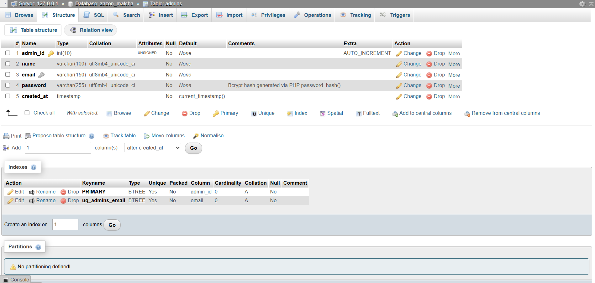
admins (01-table-admins-structure.png)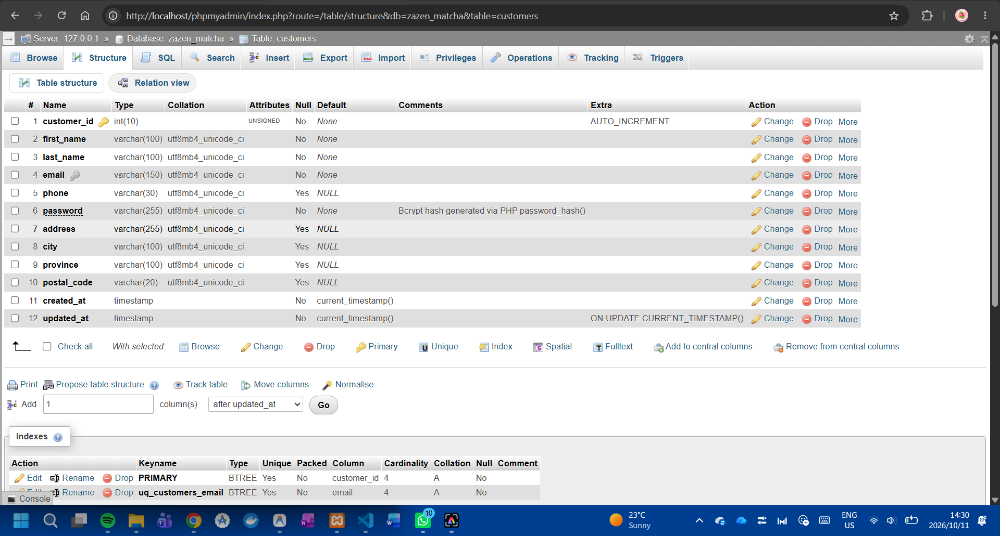
customers (02-table-customers-structure.png)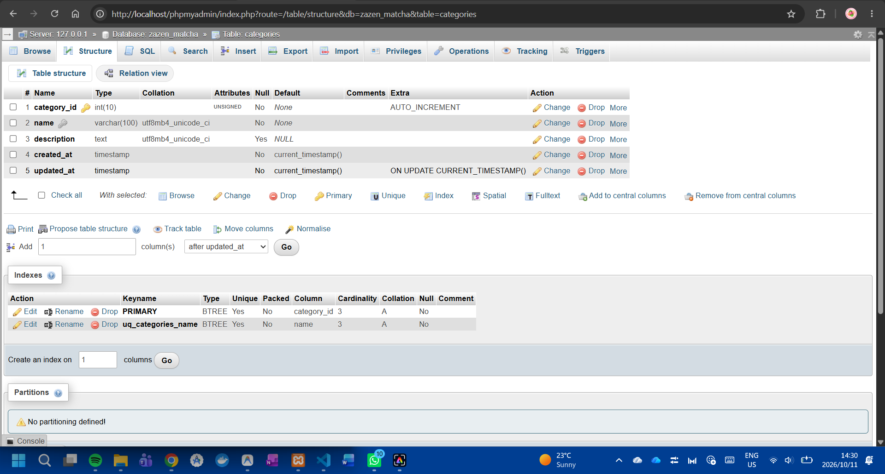
categories (03-table-categories-structure.png)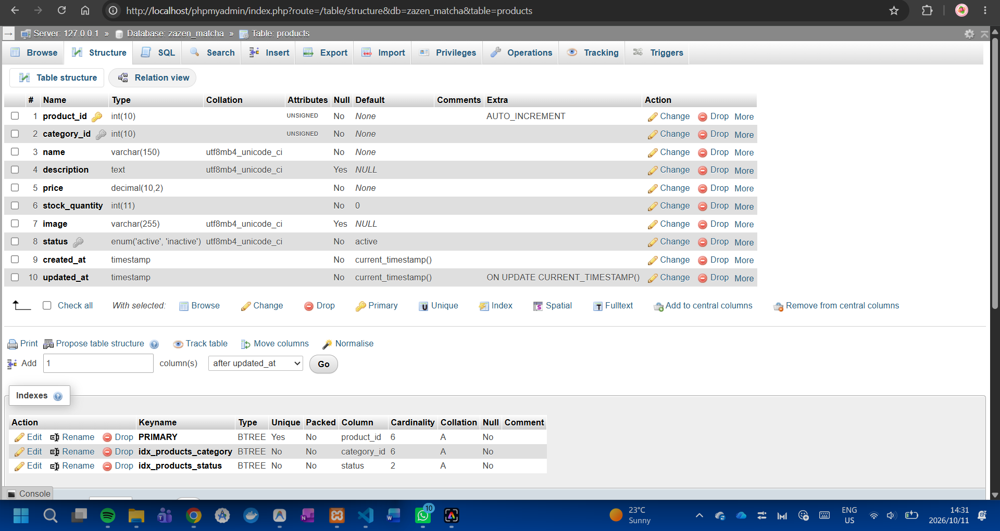
products (04-table-products-structure.png)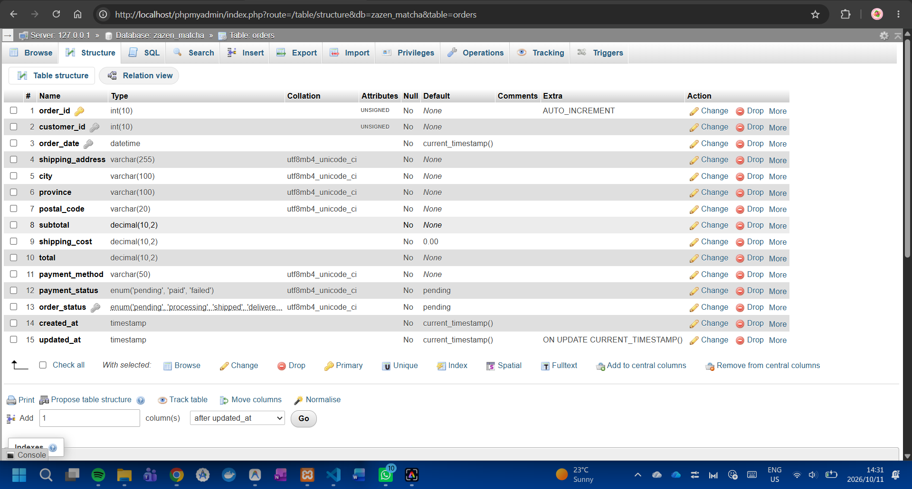
orders (05-table-orders-structure.png)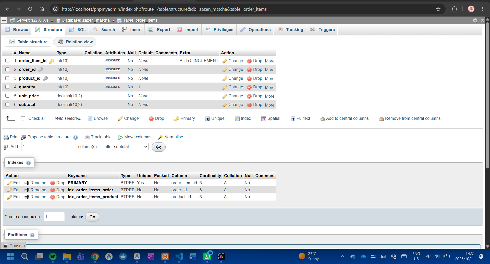
order_items (06-table-order-items-structure.png)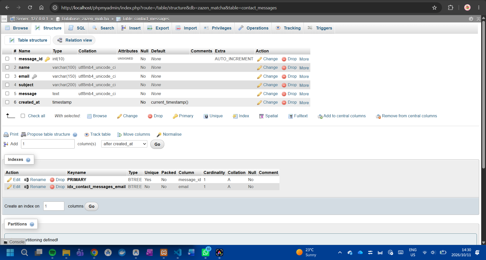
contact_messages (07-table-contact-messages-structure.png)08-database-designer-relations.png) was not captured; the seven individual table structure captures provide comprehensive, direct proof of all table structures and indexed foreign keys.
The customer storefront was evaluated using real browser automation (Microsoft Edge), read-only HTTP GET requests, static asset verification, and deep source-code auditing:
| Functional Area | Implemented Mechanism | Verification Mode | Diagnostic Result |
|---|---|---|---|
| Storefront Homepage | Root index.php rendering hero banner, values, featured teas, category grid, in-studio Tea & Matcha Bar, 3D Chawan vessel study, Uji tea story, and footer. |
Live Browser QA | HTTP 200 OK, 0 PHP errors, responsive desktop and mobile viewports verified. |
| Catalog Browsing | customer/products.php with 4 category filter pills (Matcha, Specialty Tea, Accessories, Gift Sets), keyword search, rating badges, and pagination. |
Live Browser QA | HTTP 200 OK, 0 PHP errors, all 12 product images load (200 OK), category queries verified. |
| In-Studio Tea & Matcha Bar | Dedicated section index.php#tea-bar presenting 10 handcrafted drinks across two flights (Whisked Matcha & Artisan Lattes, Iced Teas & Botanicals) with studio hours, ingredient sourcing, and clear distinction from packaged products. |
Live Browser QA | HTTP 200 OK, 0 PHP errors, responsive flight grid verified, high-resolution photography loads (200 OK). |
| Cinematic 3D Vessel Study | Signature hardware-accelerated WebGL 3D Chawan vessel study on index.php#vessel-study with lathe geometry, dynamic lighting, pointer inertia, scroll parallax, and prefers-reduced-motion fallback. |
Live Browser QA | HTTP 200 OK, WebGL canvas initializes cleanly, zero external dependencies, responsive canvas scaling, static photograph fallback verified. |
| Brand Story Page | customer/about.php featuring Uji origin history, values, and preparation philosophy. |
Live HTTP GET | HTTP 200 OK, 0 PHP errors, assets load (200 OK). |
| Product Detail View | customer/product.php featuring multi-angle gallery, quantity steppers, tasting notes, and stock checks. |
Source Audit & QA | Validated prepared query lookup across all 12 products, fallback image resolver, and CSRF token binding. |
| Shopping Cart | customer/cart.php managing session bag, server-side price re-verification, quantity updates, and cart clear. |
Live QA & Audit | CSRF validation verified on all POST actions; subtotal calculation verified (R 245.00 × 2 = R 490.00); clean cart clear verified. |
| Checkout Processing | customer/checkout.php collecting delivery details, validating SA provinces, and executing atomic transaction. |
Source Audit | Atomic PDO transaction with SELECT ... FOR UPDATE locking and rowCount() === 1 stock update verification. |
| Order Confirmation | customer/order-confirmation.php displaying order invoice, customer address, and line items. |
Source Audit | Enforces strict ownership access control (logged-in customer ID or guest last_order_id session match). |
| Customer Authentication | customer/login.php, customer/register.php using PHP password_hash() and password_verify(). |
Live HTTP GET | HTTP 200 OK on both routes, 0 PHP errors, clean form presentation. |
| Customer Account Portal | customer/account.php allowing profile editing, password changes, and order history inspection. |
Source Audit | Protected by require_customer_login(); password change uses password_verify() before rehashing. |
| Studio Contact Form | customer/contact.php capturing feedback and inserting records into contact_messages. |
Live HTTP GET | HTTP 200 OK, 0 PHP errors, inputs sanitized via clean_input(). |
The management console was evaluated across administrative access control and operations modules:
| Functional Area | Implemented Mechanism | Verification Mode | Diagnostic Result |
|---|---|---|---|
| Admin Sign In | admin/login.php with isolated session initialization. |
Live HTTP GET | HTTP 200 OK, 0 PHP errors, clean CSRF-protected form. |
| Access Guard | includes/admin-auth.php protecting all management pages via require_admin_login(). |
Source Audit | Restricts unauthenticated visitors to admin/login.php without altering customer shopping carts. |
| Executive Dashboard | admin/dashboard.php aggregating live KPI counters (Products, Customers, Orders, Sales) and 5 recent orders. |
Source Audit | Clean PDO prepared statements computing real-time aggregates and revenue sums. |
| Product Management | admin/products.php, product-add.php, product-edit.php providing full catalog CRUD. |
Source Audit | Validates dynamic category dropdowns, enforces numeric price/stock rules, flags low stock (≤ 10). |
| Category Management | admin/categories.php, category-add.php, category-edit.php providing taxonomy CRUD. |
Source Audit | Aggregates linked product counts; enforces case-insensitive name uniqueness (LOWER(name)). |
| Customer Oversight | admin/customers.php, customer-details.php listing accounts and order histories. |
Source Audit | Newest-first sorting; strictly excludes password hashes from SELECT projection. |
| Orders Oversight | admin/orders.php, order-details.php displaying order journal and line item breakdown. |
Source Audit | Displays historical delivery snapshot and purchased order_items.unit_price. |
| Status Mutation Gap | Order status update controls in admin/order-details.php. |
Source Audit | Identified Gap: The details page is currently read-only. Adding status transition controls is proposed. |
| System Settings | admin/settings.php verifying store information and live database health. |
Source Audit | Executes live SELECT 1 AS connection_ok query and displays record count summaries. |
In accordance with academic transparency, the following technical boundaries of the Deliverable 2 prototype are documented:
admin/order-details.php provides an immutable, read-only audit view of orders and line items. Administrators cannot currently change fulfillment status (pending → shipped) directly on the page.admin/order-details.php allowing administrators to update order_status and payment_status.customer/order-confirmation.php.mysql-zazen-matcha.alwaysdata.net) maintaining referential integrity across all 7 operational tables.The Zazen Matcha & Tea Co. Deliverable 2 project has successfully established a production-grade, database-driven e-commerce platform that fulfills all functional, architectural, and ethical criteria of the Eduvos ITECA3-34 curriculum:
SELECT ... FOR UPDATE row-locking during checkout solves one of the most critical real-world e-commerce challenges: race conditions and inventory overselling.htmlspecialchars output escaping against XSS, cryptographically secure CSRF session tokens, and modern Bcrypt password hashing.Developing Zazen Matcha provided practical mastery across several advanced competencies:
unit_price in order_items and shipping addresses in orders to ensure historical financial and legal audit compliance.db.php), reusable utility functions (functions.php), authentication guards (customer-auth.php, admin-auth.php), and template presentation layers.The Zazen Matcha codebase and documentation provide a complete, robust foundation ready for packaging, public staging deployment, and final assessment presentation.
As noted in Chapter 3, the authoritative system architecture models are maintained as version-controlled Markdown Mermaid source definitions in docs/diagrams/. The complete, verbatim source codes for all design models are documented below:
File: docs/diagrams/eerd.md
erDiagram
ADMINS {
int admin_id PK "INT UNSIGNED AUTO_INCREMENT"
varchar name "VARCHAR(100)"
varchar email UK "VARCHAR(150) UNIQUE"
varchar password "VARCHAR(255) Bcrypt Hash"
timestamp created_at "TIMESTAMP"
}
CUSTOMERS {
int customer_id PK "INT UNSIGNED AUTO_INCREMENT"
varchar first_name "VARCHAR(100)"
varchar last_name "VARCHAR(100)"
varchar email UK "VARCHAR(150) UNIQUE"
varchar phone "VARCHAR(30) NULL"
varchar password "VARCHAR(255) Bcrypt Hash"
varchar address "VARCHAR(255) NULL"
varchar city "VARCHAR(100) NULL"
varchar province "VARCHAR(100) NULL"
varchar postal_code "VARCHAR(20) NULL"
timestamp created_at "TIMESTAMP"
timestamp updated_at "TIMESTAMP"
}
CATEGORIES {
int category_id PK "INT UNSIGNED AUTO_INCREMENT"
varchar name UK "VARCHAR(100) UNIQUE"
text description "TEXT NULL"
timestamp created_at "TIMESTAMP"
timestamp updated_at "TIMESTAMP"
}
PRODUCTS {
int product_id PK "INT UNSIGNED AUTO_INCREMENT"
int category_id FK "INT UNSIGNED"
varchar name "VARCHAR(150)"
text description "TEXT NULL"
decimal price "DECIMAL(10,2)"
int stock_quantity "INT DEFAULT 0"
varchar image "VARCHAR(255) NULL"
enum status "ENUM('active','inactive')"
timestamp created_at "TIMESTAMP"
timestamp updated_at "TIMESTAMP"
}
ORDERS {
int order_id PK "INT UNSIGNED AUTO_INCREMENT"
int customer_id FK "INT UNSIGNED"
datetime order_date "DATETIME DEFAULT CURRENT_TIMESTAMP"
varchar shipping_address "VARCHAR(255)"
varchar city "VARCHAR(100)"
varchar province "VARCHAR(100)"
varchar postal_code "VARCHAR(20)"
decimal subtotal "DECIMAL(10,2)"
decimal shipping_cost "DECIMAL(10,2) DEFAULT 0.00"
decimal total "DECIMAL(10,2)"
varchar payment_method "VARCHAR(50)"
enum payment_status "ENUM('pending','paid','failed')"
enum order_status "ENUM('pending','processing','shipped','delivered','cancelled')"
timestamp created_at "TIMESTAMP"
timestamp updated_at "TIMESTAMP"
}
ORDER_ITEMS {
int order_item_id PK "INT UNSIGNED AUTO_INCREMENT"
int order_id FK "INT UNSIGNED"
int product_id FK "INT UNSIGNED"
int quantity "INT UNSIGNED DEFAULT 1"
decimal unit_price "DECIMAL(10,2)"
decimal subtotal "DECIMAL(10,2)"
}
CONTACT_MESSAGES {
int message_id PK "INT UNSIGNED AUTO_INCREMENT"
varchar name "VARCHAR(100)"
varchar email "VARCHAR(150)"
varchar subject "VARCHAR(200)"
text message "TEXT"
timestamp created_at "TIMESTAMP"
}
CATEGORIES ||--o{ PRODUCTS : "classifies (1:N)"
CUSTOMERS ||--o{ ORDERS : "places (1:N)"
ORDERS ||--|{ ORDER_ITEMS : "contains (1:N)"
PRODUCTS ||--o{ ORDER_ITEMS : "referenced_in (1:N)"File: docs/diagrams/context-diagram.md
flowchart LR
%% External Entities
subgraph ExternalActors ["External Actors"]
CUST["Customer / Guest Shopper\n(Web Browser Client)"]
ADMIN["Store Administrator\n(Web Browser Client)"]
end
%% Central System Boundary
subgraph SystemBoundary ["Zazen Matcha e-Commerce Platform (System Boundary)"]
SYS(("0.0\nZazen Matcha\ne-Commerce System\n(PHP 8 + MariaDB)"))
end
%% Customer Data Flows (Inputs)
CUST -->|"1. Registration / Login Credentials\n2. Catalog Search & Filter Queries\n3. Cart Items & Quantity Updates\n4. Shipping Details & Tender Selection\n5. Studio Contact Messages"| SYS
%% Customer Data Flows (Outputs)
SYS -->|"1. Product Listings, Stock & Price Details\n2. Active Shopping Bag & Subtotal State\n3. Order Invoices & Tracking Receipts\n4. Profile Details & Password Status\n5. Flash Feedback & Validation Alerts"| CUST
%% Admin Data Flows (Inputs)
ADMIN -->|"1. Admin Authentication Credentials\n2. Product Records (Name, Price, Stock, Image)\n3. Category Records (Name, Description)\n4. Order Fulfillment Review Queries\n5. Customer Account Oversight Requests"| SYS
%% Admin Data Flows (Outputs)
SYS -->|"1. Protected Admin Session & Navigation\n2. Real-time KPI Dashboard & Financial Totals\n3. Catalog Inventory Reports & Low-Stock Alerts\n4. Order Fulfillment Records & Historical Line Items\n5. Database Health & Diagnostic Status"| ADMIN
%% Styling
style SYS fill:#2d3a2e,stroke:#1a231b,stroke-width:3px,color:#ffffff
style CUST fill:#f9f8f6,stroke:#4a5d4e,stroke-width:2px,color:#181a17
style ADMIN fill:#f9f8f6,stroke:#4a5d4e,stroke-width:2px,color:#181a17File: docs/diagrams/dfd-level-1.md
flowchart TD
%% External Entities
CUST["Customer / Guest Shopper"]
ADMIN["Store Administrator"]
%% Data Stores (InnoDB Tables & Session)
D1[("D1: customers")]
D2[("D2: products")]
D3[("D3: categories")]
D4[("D4: orders")]
D5[("D5: order_items")]
D6[("D6: admins")]
D7[("D7: contact_messages")]
D8[("D8: Session Cart State")]
%% Process 1.0: Authentication & Profile
subgraph P1 ["1.0 Authentication & Profile Management"]
P1_AUTH(("1.0\nAuthenticate &\nManage Profiles"))
end
CUST -->|"Login / Register / Profile Details"| P1_AUTH
P1_AUTH -->|"Customer Credentials & Addresses"| D1
D1 -->|"Profile Data & Bcrypt Hash"| P1_AUTH
ADMIN -->|"Admin Login Credentials"| P1_AUTH
P1_AUTH -->|"Verify Admin Credentials"| D6
D6 -->|"Admin Hash & Name"| P1_AUTH
P1_AUTH -->|"Session Cookie & Flash Alerts"| CUST
P1_AUTH -->|"Admin Session Cookie"| ADMIN
%% Process 2.0: Catalog Browsing & Search
subgraph P2 ["2.0 Catalog Browsing & Search"]
P2_CAT(("2.0\nBrowse &\nSearch Catalog"))
end
CUST -->|"Search Terms & Category Filters"| P2_CAT
D2 -->|"Active Products & Prices"| P2_CAT
D3 -->|"Category Names & Descriptions"| P2_CAT
P2_CAT -->|"Formatted Product Cards & Galleries"| CUST
%% Process 3.0: Shopping Cart Management
subgraph P3 ["3.0 Shopping Cart Management"]
P3_CART(("3.0\nManage Session\nShopping Bag"))
end
CUST -->|"Add / Update / Remove Item"| P3_CART
P3_CART -->|"Verify Product Price & Stock"| D2
D2 -->|"Stock Quantity & Status"| P3_CART
P3_CART <-->|"Read / Write Cart Array"| D8
P3_CART -->|"Updated Cart View & Subtotals"| CUST
%% Process 4.0: Order Checkout & Stock Allocation
subgraph P4 ["4.0 Order Checkout & Stock Allocation"]
P4_CHK(("4.0\nExecute Checkout &\nAtomic Transaction"))
end
CUST -->|"Shipping Address & Simulated Tender"| P4_CHK
D8 -->|"Cart Items & Quantities"| P4_CHK
P4_CHK -->|"Lock Rows FOR UPDATE & Deduct Stock"| D2
P4_CHK -->|"Read / Provision Customer"| D1
P4_CHK -->|"Insert Order Header"| D4
P4_CHK -->|"Insert Order Items (Historical Unit Price)"| D5
P4_CHK -->|"Clear Cart State"| D8
P4_CHK -->|"Order Invoice & Tracking Reference"| CUST
%% Process 5.0: Product & Category Administration
subgraph P5 ["5.0 Product & Category Administration"]
P5_ADM(("5.0\nManage Products\n& Categories"))
end
ADMIN -->|"Add / Edit Products & Categories"| P5_ADM
P5_ADM -->|"Insert / Update Product Records"| D2
P5_ADM -->|"Insert / Update Category Records"| D3
D2 -->|"Product Catalog Listings"| P5_ADM
D3 -->|"Category Taxonomy & Counts"| P5_ADM
P5_ADM -->|"CRUD Status & Validation Feedback"| ADMIN
%% Process 6.0: Order Oversight & Business Analytics
subgraph P6 ["6.0 Order Oversight & Business Analytics"]
P6_ORD(("6.0\nReview Orders &\nAggregate Metrics"))
end
ADMIN -->|"View Orders & Dashboard Request"| P6_ORD
D4 -->|"Order Totals, Dates, Statuses"| P6_ORD
D5 -->|"Order Items & Line Subtotals"| P6_ORD
D1 -->|"Customer Shipping Names"| P6_ORD
P6_ORD -->|"KPI Metrics & Order Breakdowns"| ADMIN
%% Process 7.0: Customer Inquiries
subgraph P7 ["7.0 Customer Inquiries & Studio Care"]
P7_MSG(("7.0\nReceive Studio\nContact Inquiries"))
end
CUST -->|"Submit Studio Contact Form"| P7_MSG
P7_MSG -->|"Insert Inquiry Record"| D7
D7 -->|"Read Inquiry Records"| ADMIN
P7_MSG -->|"Submission Confirmation Alert"| CUST
%% Styling
style P1_AUTH fill:#e2e8e2,stroke:#2d3a2e,stroke-width:2px,color:#181a17
style P2_CAT fill:#e2e8e2,stroke:#2d3a2e,stroke-width:2px,color:#181a17
style P3_CART fill:#e2e8e2,stroke:#2d3a2e,stroke-width:2px,color:#181a17
style P4_CHK fill:#c8d8c8,stroke:#2d3a2e,stroke-width:2px,color:#181a17
style P5_ADM fill:#e2e8e2,stroke:#2d3a2e,stroke-width:2px,color:#181a17
style P6_ORD fill:#e2e8e2,stroke:#2d3a2e,stroke-width:2px,color:#181a17
style P7_MSG fill:#e2e8e2,stroke:#2d3a2e,stroke-width:2px,color:#181a17File: docs/diagrams/use-case-diagram.md
classDiagram
class GuestVisitor {
<<Actor>>
Unauthenticated Shopper
}
class RegisteredCustomer {
<<Actor>>
Authenticated Account Holder
}
class Administrator {
<<Actor>>
Store Manager / Fulfillment Admin
}
GuestVisitor <|-- RegisteredCustomer : Generalizes / Inheritsflowchart LR
%% Actors
GUEST["👤 Guest Visitor"]
CUST["👤 Registered Customer"]
ADMIN["👤 Administrator"]
%% System Boundary
subgraph ZazenPlatform ["Zazen Matcha e-Commerce Platform Boundary"]
%% Storefront & Discovery
UC01(["UC-01: Browse Storefront & Story"])
UC02(["UC-02: Browse & Search Catalog"])
UC03(["UC-03: View Product Details & Gallery"])
UC04(["UC-04: Manage Shopping Bag"])
%% Checkout & Orders
UC05(["UC-05: Guest Checkout"])
UC06(["UC-06: Registered Checkout"])
UC07(["UC-07: View Order Receipt"])
UC_TX[["«include»\nAtomic Stock Deduction\n& Order Transaction"]]
UC_CSRF[["«include»\nCSRF Token Validation"]]
%% Customer Account
UC08(["UC-08: Register Customer Account"])
UC09(["UC-09: Authenticate / Login"])
UC10(["UC-10: Manage Account & Address"])
UC11(["UC-11: Change Password"])
UC12(["UC-12: View Personal Order History"])
UC13(["UC-13: Submit Studio Inquiry"])
%% Administrator Use Cases
UC14(["UC-14: Administrator Login"])
UC15(["UC-15: View KPI Analytics Dashboard"])
UC16(["UC-16: Manage Products (CRUD)"])
UC17(["UC-17: Manage Categories (CRUD)"])
UC18(["UC-18: View Orders & Line Items"])
UC19(["UC-19: Oversee Customer Directory"])
UC20(["UC-20: Inspect System Settings"])
%% Proposed / Future Enhancements (Clearly Differentiated)
subgraph ProposedFeatures ["«Proposed / Future Enhancements»"]
UCP1(["UC-P1: Update Fulfillment Status"])
UCP2(["UC-P2: Online Payment Gateway API"])
UCP3(["UC-P3: Automated Email Invoices"])
end
end
%% Guest Interactions
GUEST --> UC01
GUEST --> UC02
GUEST --> UC03
GUEST --> UC04
GUEST --> UC05
GUEST --> UC08
GUEST --> UC13
%% Customer Inherited & Specific Interactions
CUST -.->|inherits| GUEST
CUST --> UC06
CUST --> UC07
CUST --> UC09
CUST --> UC10
CUST --> UC11
CUST --> UC12
%% Administrator Interactions
ADMIN --> UC14
ADMIN --> UC15
ADMIN --> UC16
ADMIN --> UC17
ADMIN --> UC18
ADMIN --> UC19
ADMIN --> UC20
%% Include Relationships
UC05 -.->|«include»| UC_TX
UC05 -.->|«include»| UC_CSRF
UC06 -.->|«include»| UC_TX
UC06 -.->|«include»| UC_CSRF
UC08 -.->|«include»| UC_CSRF
UC10 -.->|«include»| UC_CSRF
UC11 -.->|«include»| UC_CSRF
UC16 -.->|«include»| UC_CSRF
UC17 -.->|«include»| UC_CSRF
%% Proposed Linkages
ADMIN -.->|«proposed»| UCP1
UC06 -.->|«proposed»| UCP2
UC_TX -.->|«proposed»| UCP3
%% Styling
style ZazenPlatform fill:#faf9f7,stroke:#2d3a2e,stroke-width:2px
style ProposedFeatures fill:#f4f1ea,stroke:#8c7355,stroke-dasharray: 5 5,stroke-width:1px
style UC_TX fill:#dce6dc,stroke:#2d3a2e,stroke-width:1px
style UC_CSRF fill:#dce6dc,stroke:#2d3a2e,stroke-width:1pxIn compliance with the Eduvos Higher Education Policy on Artificial Intelligence and Academic Integrity, this appendix provides a transparent, comprehensive declaration of the artificial intelligence systems utilized during the research, architectural design, software development, troubleshooting, and documentation phases of Deliverable 2.
All submitted work has been subjected to rigorous human peer review, manual debugging, and functional execution verification by the student author. The student author retains complete ownership of and intellectual accountability for all code, database structures, system models, and written analyses presented in this submission.
The AI assistant was utilized across the following delimited technical domains:
includes/db.php, includes/functions.php, includes/customer-auth.php, includes/admin-auth.php) without the use of prohibited third-party CMS platforms or monolithic application frameworks.customer/checkout.php, specifically the implementation of SELECT ... FOR UPDATE pessimistic row-locking on InnoDB tables to prevent inventory race conditions.aria-label, aria-hidden) across catalog and product views.htmlspecialchars output encoding (XSS mitigation), CSRF token validation, and detection of hardcoded development credentials.To guarantee that no hallucinated, insecure, or unverified artifacts were incorporated into the project:
01-table-admins-structure.png through 07-table-contact-messages-structure.png) are genuine, full-resolution phpMyAdmin captures from the operational database. No screenshots, mockups, or client signatures were synthetically fabricated.https://zazen-matcha.alwaysdata.net/).